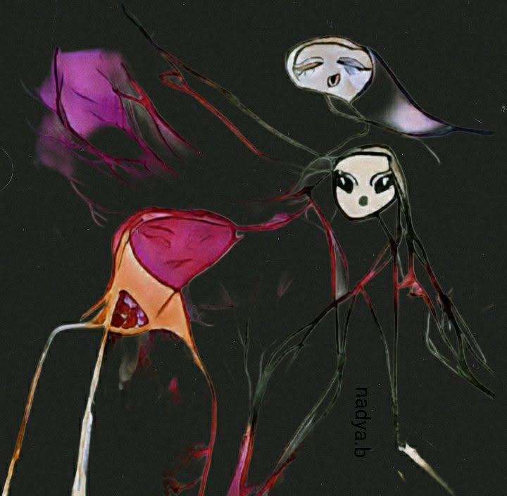

À toi, tisseuse d’ombres et de braises,
Nadya Benamar
Tu dis que tes chants sont méchants —
mais je les ai vus, moi,
se pencher doucement
sur les plaies qu’ils réveillent.
Dans ton mur je frappe à l’oreille,
Tes chants ne sont pas méchants —
Ils saignent, voilà tout.
Mais de ce sang naît l’encre,
Et de l’encre, un corps nouveau
Qui marche vers demain.
Tu chantes dans ton mur ;
sais-tu qu’il tremble ?
À force de murmures,
tu y creuses des fenêtres.
Tes néants ont des couleurs
que mes yeux ne savaient nommer.
Tu prends la cendre du passé
et tu la souffles en aurore.
Ces milliers gravés à l’encre dure,
tu ne les portes pas seule :
à travers ta peau de poème
nos mémoires respirent.
Tu dis le fardeau —
mais j’entends le courage.
Tu dis l’incertitude —
et moi, j’y vois l’aube
qui hésite avant d’être lumière.
Tatoue encore tes vers sur ta chair,
qu’ils deviennent battement,
qu’ils deviennent voix.
Car lorsque tu t’émerveilles de ton chant,
ce n’est pas orgueil —
c’est la vie qui s’étonne
d’avoir trouvé ton souffle.
Continue, amie,
à mêler le froid à l’ardeur :
c’est dans ce clair-obscur
que naissent les vérités
qui savent aimer sans brûler.
Je te lis,
et mes silences
se mettent à chanter.
Djamel Metref
At Yenni le 4 mars 2026

← Tous les poèmes